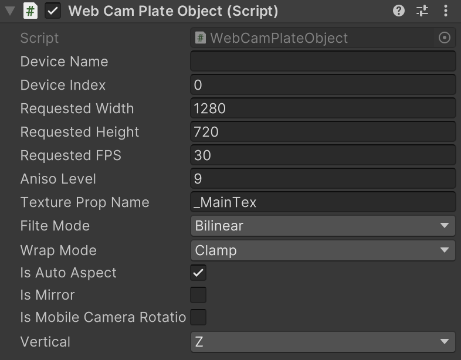

WebCamPlateObject
Web カメラを利用する場合の設定を簡易化します。映像はテクスチャに反映されます。
namespace GarageKit
[RequireComponent(typeof(Renderer))]
public class WebCamPlateObject : MonoBehaviour
Inheritance
WebCamPlateObject -> MonoBehaviour
Inspector
Properties
| member | type | description |
|---|---|---|
| deviceName | string | カメラデバイス名の指定 |
| deviceIndex | int | カメラデバイス ID の指定 |
| requestedWidth | int | カメラ映像 幅の指定 |
| requestedHeight | int | カメラ映像 高さの指定 |
| requestedFPS | int | カメラ映像 FPS の指定 |
| anisoLevel | int | 映像テクスチャの異方性フィルタリングレベル |
| texturePropName | string | シェーダーのテクスチャプロパティ名 |
| filteMode | FilterMode | 映像テクスチャのフィルターモード |
| wrapMode | TextureWrapMode | 映像テクスチャの繰り返しモード |
| isAutoAspect | bool | アスペクトの自動設定 |
| isMirror | bool | 左右反転設定 |
| isMobileCameraRotation | bool | 端末の回転方向反映 |
| vertical | OBJECTAXIS_Y | 上方向の軸設定 |
Enums
OBJECTAXIS_Y
| enums | description |
|---|---|
| Y | オブジェクトの Y 軸方向 |
| Z | オブジェクトの Z 軸方向 |
Methods
WebCamTexture の取得
public WebCamTexture WebCamTexture { get; }
Web カメラが正常に開かれているかの確認
public bool IsWebCamPlaySuccess()